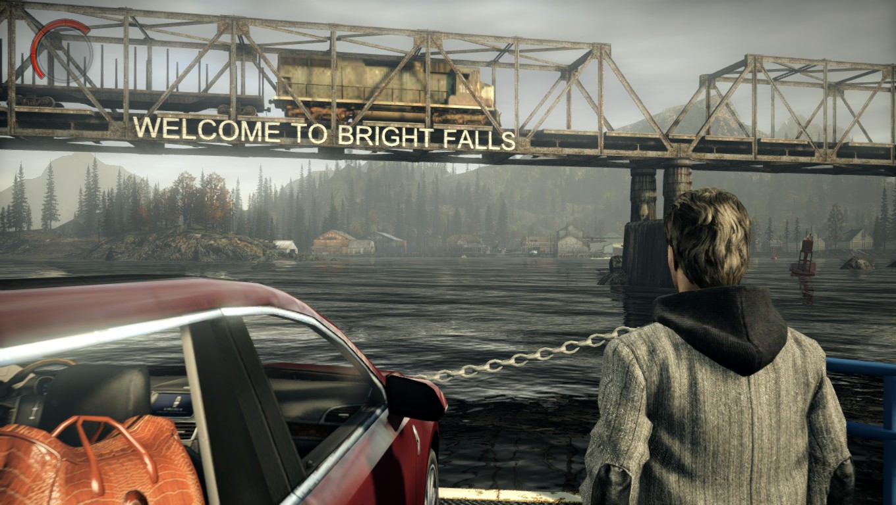
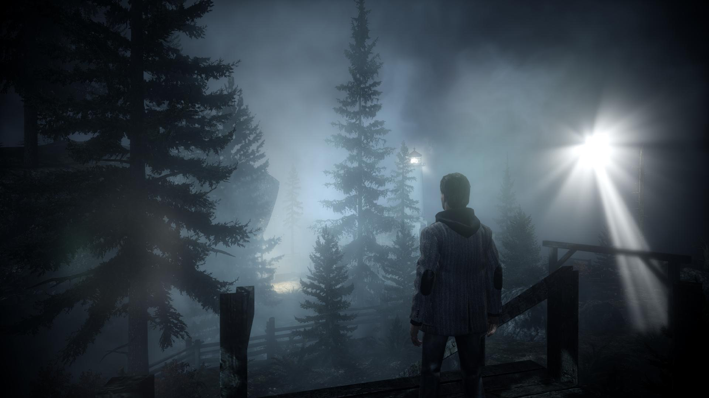
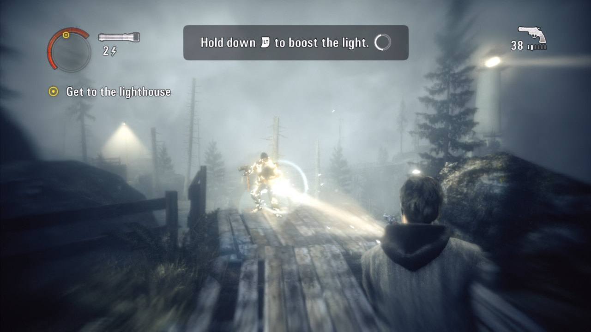
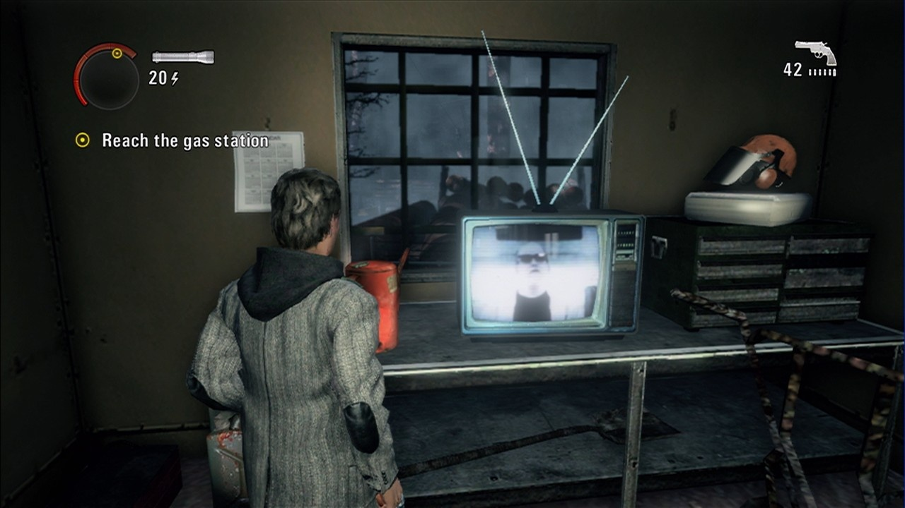

[Review] Alan Wake
You might not think that a game about a writer who has the classic writer’s block would turn out to be such an interesting adventure. As a matter of fact the game almost didn’t have a PC version as the guys from Remedy kept refusing doing it. But finally, we got what us, fanatic PC gamers, waited for. Or at least, I sure did. Because this game took me through a mind-blowing and captivant story with a main character that I started having actual feelings for by the end of the game (no homo).
But let’s start by explaining some of the things that happen in the Alan Wake universe. Of course, the story follows Alan Wake, a bestselling thriller novelist who didn’t write anything in the past two years and wants to release his creative talents once again and decides to take a vacation with his wife, Alice, in the wonderful town of Bright Falls, Washington. Even from the start of the game the player is able to feel some kind of tension, something dark hidden in the depth of the mountains, despite the paradise-like picture. And soon, the suspicions turn out to be true as the horror of this place is revealed once the night falls.
The beautiful wife of our writer disappears and he embarks on a journey from which he might not return, not the same at least. Alan and his agent and friend Barry Wheeler try to uncover the mysteries behind Alice’s kidnapping and soon find out that supernatural forces rule these lands and all of Wake’s nightmares come to life, darkness itself being the main antagonist of the story. What is even weirder is that all the events turn out to be the plot of a story created by Alan, a story which he doesn’t remember writing. Therefor, pages found throughout the game help our hero predict what will happen next. Every twist of the story and the way the characters are built make this game, from my opinion, one of the best game of the year 2012, a game which anyone should play, specially the classic horror / Stephen King fans.
The gameplay is also interesting and unique. You get basically a flashlight and a gun. Every enemy that you meet throughout the game is protected by the dark-force that controls him so to kill the body you have to destroy the darkness around it first. So there the flashlight comes in handy, two or three seconds of light directed to the enemy and the dark slime-like shield disappears. After that you are free to make how many holes you want in the enemies’ body with the specific gun that you use. There are different types of flashlights, each one differing from another by the power of light and of course there are different types of guns, from a revolver and shotguns to a really powerful hunting rifle. You can also use flares, a flare gun and not the least flash grenades, light being the main weapon against the darkness. The ammunition is pretty scarce, specially on the higher difficulties so you must be pretty careful on how you rationalize it, this fact and having some good reflexes so that you can dodge enemy attacks are the main things you need to have in consideration so you can stay alive while playing this game.
The graphics are pretty good, taking in consideration that the game was ported from the Xbox 360. There have been complaints that people suffer from lag spikes and visual bugs on some video cards but I didn’t have any problems on my Nvidia Card. I’m pretty sure any problem can be fixed with the latest patch from Remedy. Anyway, you can truly admire the landscape, the game engine doing a pretty good job with the lightning and textures. Of course for that year (2012), there was always room for better, but like I said before, it was a ported game so I guess we can’t ask for more. I’m satisfied with the graphics anyway.
Even if it’s the last part I think it’s one of the main things that make this game remarkable, besides the epic story, and that is the sound. The voice actors are doing an absolutely great job, everything is authentic and really making me believe the story. Every emotion is captured in the right way and that’s why you start loving and emphatizing with the characters. Oh, and the music is just syncronizing perfectly with the action and the tension of the game, creating for the player a full experience.
| Good Parts | Bad Parts | Final Score |
|---|---|---|
| Captivating story(one of the best I could say) | The gameplay gets kind of too repetitive to the end of the game | 9/10 |
| Solid characters | ||
| Professional voice acting | Reports of minor FPS Lagspikes on some video cards | |
| Awesome soundtrack having a great synergy with the game itself |